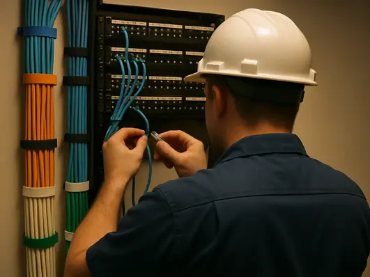

A practical commercial
infrastructure conversation.
Hybridata Solutions LLC is family-owned and headquartered in Fort Worth, Texas. It provides nationwide IT integration services across the five approved major service groups.
Approved facts, stated directly.
Hybridata Solutions LLC is family-owned and headquartered in Fort Worth, Texas. Hybridata provides nationwide IT integration services.
The team brings 40+ years of combined experience. Experienced BICSI field technicians support field delivery. These are team and field-experience statements, not a claim about company age or additional credentials.
Completed-sector experience includes data centers, distribution centers, commercial environments, healthcare, government, and airports. No client name, project outcome, metric, endorsement, or sector-specific approval is presented.

Operating principles, carried through the project conversation.
Hybridata's public copy identifies scope, conditions, and the next conversation. Contract terms and project-specific details belong in the appropriate project record.
- 01
Project-aware
The facility, requirements, available information, and responsible parties shape the useful next step.
- 02
Field-grounded
Routes, pathways, rooms, systems, existing conditions, and project stage are treated as inputs rather than background.
- 03
Clear about boundaries
Authority decisions, project terms, methods, results, and acceptance are not represented before the applicable scope defines them.
- 04
Commercially direct
Hybridata is fully insured, and work includes a warranty on materials and labor. Project terms define the details.
What the public record says—and what remains project-specific.
- 40+ years of combined experience
- This is team experience. It is not a statement that Hybridata has operated for 40 years.
- Experienced BICSI field technicians
- This does not add a certification or credential claim beyond the approved statement.
- Fully insured
- Limits and project-specific documentation are handled during the commercial process.
- Warranty on materials and labor
- Terms, duration, and exclusions are defined in the project agreement.
Bring the building, the requirement, and what you already know.
Hybridata can help organize the next infrastructure conversation around the approved information and actual facility context.